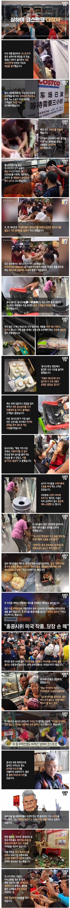

중국 상하이 코스트코 오픈 대참사
댓글
천안문으로 병신들만 남은것부터 문제임 자유주의였음 그럴일도 없음
그건 아님...천안문도 사실은 한국인들이 보통 말하는 것보다 더 복잡했고ㅋㅋㅋ
중국이 인구가 많아서 그만큼 ㅂㅅ의 절대 숫자도 높음. 미국을 봐 걍 답없이 멍청하고 꼴리는대로 하니까 자유주의랑 결합돼서 더 이상하게 날뛰잖아. 저건 교육 문제도 있지만 걍 인구랑 지능 문제도 있는 것 같음
물론 그렇다고 독재주의가 좋다는 것은 아님. 아 그리고 혹시 모르니까 시진핑 개새끼 난 미국에서 15년동안 살아온 친미임ㅋㅋㅋㅋㅋㅋ
쟤들이 자유국가였으면 이미 오호십육국처럼 16갈래로 찢어졌을거야
애초에 중앙에서도 통제 못해서 지방 마을끼리 서로 무장충돌로 승부 봤던 애들임 ㅋㅋㅋ
인도식 경찰 도입 쌉 가능이지
20년전에는 중국 경찰들도 사람 팼었는데
중국의 배려심 vs 인도의 위생
자강두천
따뜻한 아이스 아메리카노처럼 존재할리 없는 것만 있네
따아아는 실존해
참사라기엔 당연한 결과 아니냐
영상 링크도 달아줘야지 센스하곤
너무 옛날 꺼라 영상 안 남아 있을 듯
아 저거 오래 된거임?
엥
저럴 줄 몰랐나?
그럴리가 없는데 ㅋ
뭐야 원래 문화가 그런건데...
몰랐어?????
저럴거 이미 알았을텐데 현장 실무자들만 죽어나겠지
쟤네도 공안이 돌아다니면서 저런거 존나 패야하는데
미개한 중국 새기들은 답이 없다
빈미는 직업이래 ㅋㅋㅋㅋㅋㅋㅋㅋ
중국 사회가 추구하는게 사회로써는 이상적이지만 개개인한테는 좆같지
누가 통제와 자유 어디서 살고 싶겠냐고
진짜 미개하다
세상에 어떻게 저렇게 미개할수가 있담
동물의 왕국이네
중국을 우습게 보지마라!
똥닦은손을 오줌으로 씻는 대로 한가운데 인도인 글을 보고나니 이 정도는 타격이 없군
오줌으로 똥 묻은 손을 씻은 게 아니라, 손으로 나오는 오줌을 받아서 그걸로 항문 씻는 거 아녔음?
개ㅅㅂ 글만 읽어도 진짜 ㅈ같네 인도인 중국인은 둘다 지구상에서 박멸해야한다
근데 중국 많은 인구 대비 엄청난 경쟁 생각하면
저렇게 살지 않고는 버틸 수 있나 싶기도 함 ㄹㅇ 저긴 지옥임
마트에서 계산 안 한 음료 마시고 "계산 할 건데 뭐가 문제냐 문화 차이 인정해달라"하던 짤 생각나네 ㅋㅋ
아니나다를까 계산 안하고 슬그머니 냅두는거 까지가 "문화"잖아ㅋㅋㅋ
하루 이틀임?
저런 새끼들 거르려고 회원제로 운영하는거 아니냐
회원제인데 저지경이 된거임?
2019년얘기네
7년전일이고 지금은 안그러긴 하는듯? 저들이 글로벌바퀴벌레임에는 틀림이 없지만
품절된거 맞지? 박살나거나 없어진거 아니지? ㅋㅋㅋㅋㅋ
돼지고기 가격 중국 지금 존나 싸졌다고 본거같은데
옛날 자료인듯
어떻게 다시 싸졌지? 콩 사줬나
미제에 정신을 못차리는구만
공짜로 주는 행사장도 아니고 마트에서까지 저런다니 ㅋㅋㅋ정말 미개하군
풍화까지 됐는데 10년 다 되어가는 일을 지금 올리는 이유가 뭐임? 혐오해달라고?
상하이 지점이 전세계 코스트코 매장 매출 순위 1위임
우리가 일본 노선 타는 것 같아서 걱정된다.
우리는 꾸준히 일본 노선을 타 왔음.
우리 나라도 인구밀도 조금 더 높아지면 저렇게됨
여의도 불꽃 축제, 각종 공연들 되팔렘들 보고 뭔
애초에 중국에 코스트코 똑같이 만들어놓은 매장도 있더만 왜 거긴 안쓰고... 가격도 싸더만.
자국 음식은 못믿는다는건가?
쟤네는 도덕 수업이 없나봐 ㅎㅎ
도덕의 근원이 중국본토에서 왔건만.
아이러니함
혁명때 도덕의 근간인
공자 묘를 부셨을 정도니
큰걸 바라면 안될거같긴함
공산주의를 옹호 하는건 아닌데 쟤들은 자유 국가였으면 범죄율 죤나 높았을듯